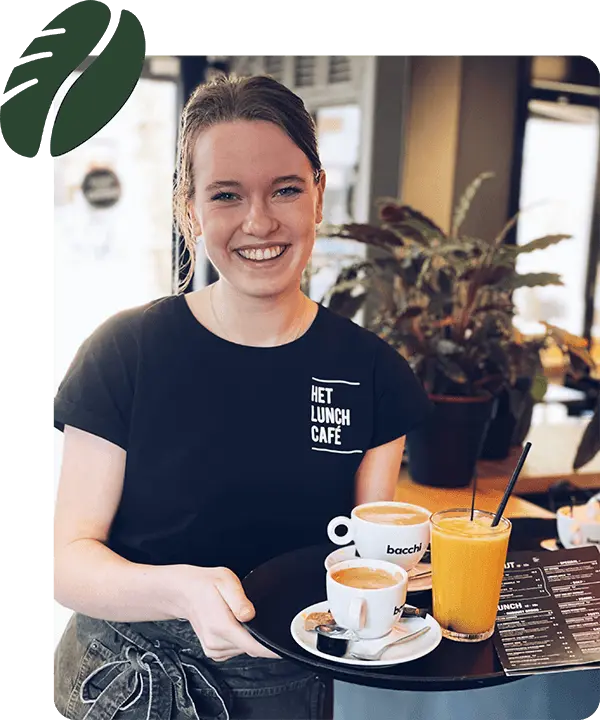
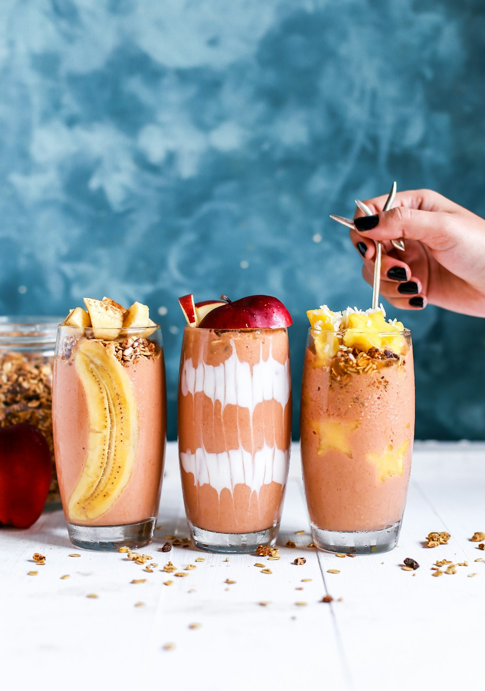
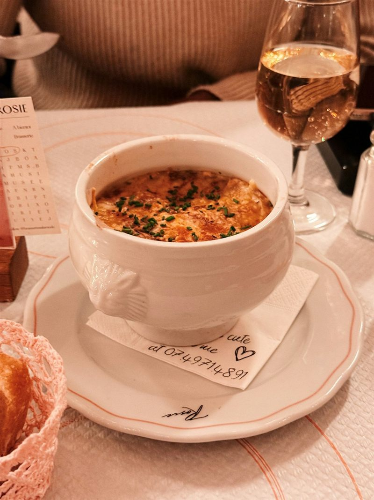

Het Lunch Café
Huisgemaakte ontbijt- en lunchgerechten, de lekkerste koffies, taarten uit eigen keuken, verse sappen en gezonde smoothies. Aan het Plein in Nijkerk.

WaarPlein 22, Nijkerk
Open10:00 tot 17:00 uur
Lunchde hele dag tot 16:00
Ookkoffie-to-go en lunchcatering

Met net dat beetje extra aandacht
Bij Het Lunchcafé draait alles om passie voor lekker eten, gastvrijheid en gezelligheid. Of je nu komt voor een ontspannen lunch, een snelle koffie-to-go haalt of gebruikmaakt van onze lunchcatering: wij staan graag voor je klaar.
Wat ons uniek maakt? Onze liefde voor goed, vers én lekker eten en drinken. Van ambachtelijke broodjes tot smaakvolle salades, huisgemaakte taartjes, verse sapjes en de beste koffie: alles wordt met zorg en aandacht bereid.
Het Lunchcafé is meer dan een plek om te eten. Het is een ontmoetingsplek waar vrienden samenkomen, zakenpartners bijpraten en nieuwe connecties ontstaan. We kijken ernaar uit je te verwelkomen.
Vers en huisgemaakt
Van ambachtelijke broodjes en salades tot huisgemaakte taartjes.
Vers bereide koffie
Ontdek de warme sfeer onder het genot van een heerlijk kopje koffie.
Koffie-to-go en catering
Even snel iets halen, of de lunch laten verzorgen? Vraag ons gerust.
De kaart
All day lunch tot 16:00 uur. Dieetwensen of allergieën? Laat het ons weten.
Sandwich maïs- of bruin brood · klein / normaal
- Rundvleeskroketten7,50 / 11,50mosterd
- Caprese8,50 / 15,25buffelmozzarella, tomaat, basilicum, pesto, rucola · met parmaham + 1,50
- Rundercarpaccio9,50 / 16,25gemengde sla, zongedroogde tomaat, Parmezaanse kaas, gedroogde tuinbonen, truffelmayonaise
- Spiegeleieren12,50kaas/ham · met spek + 1,50
- Ambachtelijke bal gehakt14,75gedroogde uitjes, Zaanse mayonaise, veldsla
- Broodje van het seizoenwisselendwisselende prijs
Flatbread
- Burrata17,50pesto, Serranoham, gepofte tomaat, pijnboompitten, rucola, balsamico · ook met gegrilde groenten i.p.v. Serranoham
- Pulled chicken17,75cashewnoten, komkommer, rode ui, zongedroogde tomaat, bosui, Parmezaanse kaas, rucola, barbecuesaus
- Gegrilde groenten vega17,50hummus, gemengde sla, rode ui, gepofte tomaat, gegrilde paprika, geroosterde courgette, vegan feta
Salade met broodje en kruidenboter
- Burrata18,75gemengde sla, Serranoham, gepofte tomaat, pijnboompitten, balsamico · ook met gegrilde groenten i.p.v. Serranoham
- Pulled chicken18,95gemengde sla, cashewnoten, komkommer, rode ui, zongedroogde tomaat, bosui, Parmezaanse kaas, barbecuesaus
- Gegrilde groenten vega18,75gemengde sla, vegan feta, geroosterde courgette, rode ui, gepofte tomaat, gegrilde paprika
Het lunchplankje
soepje van het seizoen
sandwich rundvleeskroket
sandwich met rundercarpaccio of Old Amsterdam
Tosti dubbeldik, wit- of bruin brood
- Tosti ham-kaas8,95ham, kaas, ketchup · met gebakken ei + 1,50
- Tosti caprese12,50buffelmozzarella, tomaat, basilicum, pesto, rucola
- Spaanse tosti12,50Old Amsterdam, chorizo, rode ui, sambalmayonaise
Soep en friet
- Verse huisgemaakte soep6,50 / 8,75wisselend per seizoen, met broodje en kruidenboter · als bijgerecht of als maaltijd
- Friet5,00cajunkruiden, mayonaise
- Loaded fries12,50pulled chicken, rode ui, bosui, Parmezaanse kaas, barbecuesaus
Sweets
- Griekse yoghurt8,25huisgemaakte granola, rood fruit
- Havermout-banaan pannenkoekjes12,50honing, blauwe bessen, yoghurt
- Warme appel-kaneel wafels9,50vanille-ijs, appelcompote, geroosterde pecannoten, karamelsaus · glutenvrij
- Bananenbrood5,75met yoghurt, huisgemaakte granola, rood fruit
Huisgemaakte taartjes
- Appeltaart5,25
- Cheesecake5,50
- Arretjescake4,50
- Blondie4,75
- Bananenbrood4,25met Griekse yoghurt en rood fruit + 1,50
- Dadel-walnootreep met kokos5,25suiker-, lactose- en glutenvrij
- Slagroom0,75

Koffie
- Koffie3,40
- Cappuccino3,60
- Espresso3,40
- Dubbele espresso4,15
- Espresso macchiato3,55
- Cortado3,55
- Koffie verkeerd4,25
- Latte macchiato4,25
- Flat white4,55
Chai, chocolade en ijs
- Chai latte4,50
- Dirty chai latte5,00met een shot espresso
- Warme chocolademelk3,85
- Slagroom0,75
- IJskoffie6,25
- Topping0,50caramel, hazelnoot, chocola of vanille
Thee
- Thee3,55
- Verse gemberthee3,95
- Verse muntthee3,95
- Verse munt/gemberthee4,45met sinaasappel

Verse sapjes
- Sinaasappelsap5,75
- Smoothie aardbei, banaan, sojamelk6,25
- Smoothie spinazie, mango, ananas6,25
- Smoothie banaan, blauwe bes, kokosmelk6,25
Fresh lemonades
- Passievrucht-gember4,50
- Citroen-blauwe bes4,50
- Peer-rozemarijn4,50
Soft drinks alles 3,50
- Coca-Cola
- Coca-Cola Zero
- Fanta Orange
- Fanta Cassis
- Sprite Zero
- Fuze Tea Sparkling
- Fuze Tea Green
- Ginger ale
- Ginger beer
- Bitter lemon
- Tonic
- Rivella
- Appelsap
- Bruisend mineraalwater
- Plat mineraalwater
- Halfvolle melk
- Karnemelk
- Fristi
- Chocomel

Snacks
- Friet5,00cajunkruiden, mayonaise
- Loaded fries12,50pulled chicken, rode ui, bosui, Parmezaanse kaas, barbecuesaus
- Brood met smeersels9,00pesto, kruidenboter, aïoli
- Kaastengels7,50chilisaus · 6 stuks
- Bitterballen7,50mosterd · 6 stuks
- Chicken bites8,50sriracha mayonaise · 6 stuks
- Nacho's11,75rode ui, cheddar, mozzarella, bosui, guacamole, crème fraîche, chilisaus · met pulled chicken + 4,75
Bier
- Heineken3,50
- Liefmans5,50
- Affligem Blond5,75
- Affligem Tripel5,75
- Texels Skuumkoppe5,75
- IJwit5,75
- Bier van het seizoen5,75
- Radler 0.03,95
- Affligem Blond 0.05,75
Wijn
- Sauvignon blanc5,95De Gras, Chili
- Pinot grigio6,25Ornato, Italië
- Chardonnay5,95De Gras, Chili
- Rosé6,50Les Vignerons, Frankrijk
- Merlot5,95De Gras, Chili

De originele kaarten als pdf: lunchkaart en drank-, taart- en borrelkaart.


Het Lunchcafé proeverij
Voor wie van alles wat wil proeven en delen. Geniet van diverse smaakvolle broodjes en sandwiches, een warm soepje en een assortiment huisgemaakte taartjes om mee af te sluiten.
Kom langs en laat je verrassen!
Vraag naar de proeverijKom langs
Plein 22
3861 AB Nijkerk
Openingstijden
10:00 tot 17:00 uur
All day lunch tot 16:00 uur.
Lunchcatering of koffie-to-go? Bel of mail gerust, dan denken we met je mee.